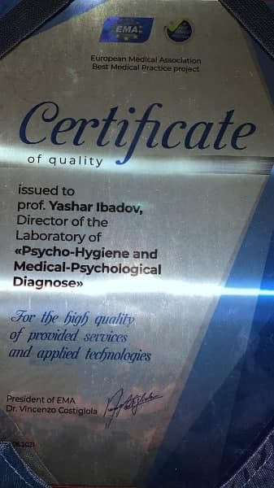

Новости и события
Открытие нового департамента при Международной Академии Экоэнергетики Айзербайджанской Республики

Новый департамент при Международной Академии Экоэнергетики Азербайджанской республики. Институт
Ботаники Национальной АН Азербайджана Institute of botany of Academy of Sciences
Институт ботаники имени В. Л. Комарова АН Азербайджанской
Международная Академия Экоэнергетики / International Academy of Ecoenergy
Подробнее читайте здесь →
Альтернативной психологии 22 года
0т всей души поздравляем уважаемого академика Яшара Садай оглы Ибадова, автора новой науки и основателя международной Школы Альтернативной Психологии, всех сотрудников и друзей с Днем Рождения АП!
За 22 года АП достигла многих успехов и продолжает развиваться, принося огромную пользу Миру!
Желаем Вам успехов во всех Ваших делах, а мы, в свою очередь, всегда будем поддерживать Вас Теория и методология АП представлена в трудах ее автора, Я.С. Ибадова. Это научные публикации на русском и азербайджанском языках, в том числе: монография «Психография как метод всестороннего развития новой личности» (2003, 2007), брошюры «Азбука «Ключей Жизни» (2008), «Медико-педагого-психологические тесты» (2008) и «Прописи», научные статьи «Концепция самосущего действия» (2011, в соавторстве с В.П. Гочем), «Фазовые Состояния 0-Метаморфоз» (2013), «Алгоритм коррекции фазовых метаморфоз живых систем» (2018) и многие другие научные исследования.
Теория Фазовых состояний 0-Метаморфоз объясняет принципы цикличности и саморазвития бытия. Концепция самосущего действия раскрывает направление движения и развития живой системы и/или Вселенной и восстанавливает творческий аспект взаимодействия человека с Мирозданием.
Важным направлением АП является работа по исследованию природных стихий, их влияния на человека, на его образ жизни, состояние экологии. Найдены изначальные символы стихий, которые не только отражают конкретные характеристики каждой стихии, но и процесс их взаимодействия. Созданная классификация стихий позволяет устранить внесенный ранее хаос в информационное поле элементов и через гармонию символов помочь человеку выйти на благоприятный уровень метаморфоз на пути развития сознания человека в Новом Времени.
Теоретические положения АП апробированы участием в проектах международного уровня, ее изобретения и конкретные технологии отмечены многими дипломами и почетными наградами.
Яшар Ибадов, руководитель Международной Школы Альтернативной Психологии, профессор, доктор медико-биологических наук, директор лаборатории психогигиены и медико-психологической диагностики Института Образования Азербайджана, академик Оксфордского Университета, ежегодно представляет инновационные разработки альтернативной психологии на международных выставках и конференциях. За научные работы и инновации, вклад в международное научно-техническое сотрудничество, развитие образовательных программ в 2018 году Яшар Ибадов награжден медалью «Михаила Васильевича Ломоносова», Специальным дипломом и Кубком Международной организации «Мировой форум исследователей и изобретателей».
Также Яшар Ибадов был избран Амбассадором Международного Института Бизнеса 2023-го года.
В 2024 г. номинирован на получение Нобелевской премии, награждён Сертификатом спикера научно-практической ассамблеи проекта BEST MEDICAL PRACTICE на фестивале здоровья и красоты «Территория Радости» в Ларнака-Никосии, Республика Кипр.
В ноябре 2024 года официально открыта кафедра Альтернативной психологии Яшара Ибадова при Академическом Союзе Оксфорда, Великобритания и получена лицензия на реализацию утвержденной концепции развития.
Желаем Вам успехов во всех Ваших делах, а мы, в свою очередь, всегда будем поддерживать Вас в Ваших начинаниях!
Уважаемый Доктор Яшар!

С огромной душевной радостью поздравляем Вас с юбилеем!
Примите наши самые искренние поздравления и выражение глубокой
признательности за Ваш вклад в развитие мировой науки!
Вы — великий ученый! А быть ученым — это значит быть терпеливым,
вдумчивым человеком, обладающим невероятным запасом знаний, эрудицией, умением анализировать,
сопоставлять, принимать альтернативные решения и зачастую не принадлежать себе. Ведь наука
требует колоссальных затрат времени и сил.
От всей души желаем Вам крепкого здоровья!
Пусть Ваши научные изыскания принесут большую пользу обществу, а Вам подарят огромное моральное удовлетворение, благополучие, уважение и радость!
14 лет творческой работы

Центр Альтернативной Психологии (ЦАП) “Седьмой ключ”,
расположенный в г. Санкт-Петербурге, был основан 19 января 2011 года по инициативе профессора
Яшара Ибадова. Имея высшее образование в области фармацевтики и психологии, являюсь
руководителем нашего семейного центра.
Совместно с супругом Владимиром мы посещали семинары автора новой науки, посвящённых методу
психографии, а также выступали с докладами на научных конференциях в Севастополе и
Санкт-Петербурге.
Подробнее читайте здесь →
ФП Года 2020 — Фазовый портрет Материнства-2

В 2009 году Я.С. Ибадов создал Фазовый портрет «Материнство». И в
течение последующих десяти лет во время Всемирных интерактивных
сеансов 31 декабря под руководством доктора Яшара Ибадова проводилась коррекция по этому ФП. ФП
«Материнство» открывает возможность очищения пространства – внутреннего
и внешнего, преобразования материи во Времени и благодаря Времени. Каждый раз рисовались ФП
текущего года. И только в 2019 году был создан Фазовый портрет планеты Земля.
На одиннадцатый год, 2020-й, в период особой ситуации, которая касалась всех жителей планеты,
был создан очередной, этапный ФП Года-2020, который
и стал новым Фазовым портретом Материнства-2. И на основе этого Фазового портрета под
руководством профессора Яшара Ибадова постоянно, через день, начиная с 1 мая,
проводилась коллективная коррекция для очищения планеты и всего человечества от вируса Ковида.
Подробнее читайте здесь →
Фестиваль здоровья и красоты «Территория Радости» в Ларнака-Никосии, Республика Кипр
Яшар Ибадов – доктор медико-биологических наук, профессор по
специальности «общая психология и интегративная медицина», практикующий врач, психолог,
биорадиолог, заведующий лабораторией психогигиены и медико-психологической диагностики при
Институте Образования Республики Азербайджан, генеральный директор Медико-психологического
центра «Яшадан эллер» (Целительные руки), Амбассадор Международного Института Бизнеса 2023
(Баку, Азербайджан), автор новой науки Альтернативная психология.
После окончания в 1985 году Бакинского медицинского
института Яшар Ибадов успешно занимается врачебной деятельностью, а с 1996 по 2001 год занимает
должность главного врача санатория «Маариф» (Баку).
В 2002-м Яшар Ибадов стал известным специалистом в области
психодиагности, психофизиологии и психокоррекции и организовал медико-психологический центр
«Яшадан эллер» (Целительные руки). Одновременно Яшар Садай оглы возглавил лабораторию
психогигиены и медико-психологической диагностики, функционирующую в Институте Образования
Республики Азербайждан. В обоих этих структурах он продолжал свой научный поиск и открытия. Они
стали базисом для написания кандидатской диссертации по теме «Методика диагностики и коррекции
функционального состояния биологических систем». Диссертация на соискание ученой степени доктора
медико-биологических наук была защищена в 2005-м году.
Подробнее читайте здесь →
Новый уровень науки
2 декабря 2024 года в Великобритании в г. Оксфорд прошла престижная
деловая встреча
Академического Союза. В понедельник исторический город Оксфорд приветствовал ведущих
мировых профессионалов на замечательной деловой встрече, организованной
Академическим союзом. Мероприятие собрало элитную группу владельцев, руководителей и
лидеров из Бразилии, Болгарии, Ганы, Малазии и Португалии. В ходе деловой встречи
состоялось вручение наград и было объявлено об открытии кафедры Альтернативной
психологии Яшара Ибадова. Была представлена видео-презентация новой науки
«Альтернативная психология», автором которой является выдающийся азербайджанский
ученый Я. Ибадов.

Выдан Сертификат, в котором говорится, что были соблюдены все
необходимые условия,
предписанные АСО. И 7 ноября 2024 года официально открыта кафедра Альтернативной
психологии Яшара Ибадова и выдана лицензия для реализации утвержденной концепции
развития.
Поздравляем уважаемого Яшара Ибадова с достижением нового уровня развития науки и желаем дальнейших успехов!!!

В начале сентября 2024 года в живописном поселке Приморский на
берегу Таманского залива состоялся форум «Преображение человека».
В гостинице «Виноградная лоза» Т.В. Немцева организовала встречу
представителей Международной Школы Альтернативной Психологии и Школы Причинности. На форум
приехали специалисты из разных городов России и зарубежья: из столицы Республики Азербайджан —
г. Баку, из г. Волгограда, а также из городов Ростов-на-Дону, Севастополь, Майкоп, Ярославль,
Новороссийск, Астрахань и Геленджик.
Форум проходил в теплой дружественной атмосфере взаимного интереса
к творческим научным разработкам и достижениям, представленным авторами. Приветственным словом
Татьяна Владимировна Немцева — генеральный директор АО «НТН», доктор экономических наук,
профессор, заслуженный деятель науки, академик, открыла работу форума.
Подробнее читайте здесь →
Альтернативной психологии 21 год
0т всей души поздравляем уважаемого академика Яшара Садай оглы
Ибадова, автора новой науки и основателя международной Школы Альтернативной Психологии, всех
сотрудников и друзей с Днем Рождения АП!
За 21 год АП достигла многих успехов и продолжает развиваться,
принося огромную пользу Миру!
Теория и методология АП представлена в трудах ее автора, Я.С.
Ибадова. Это научные публикации на русском и азербайджанском языках, в том числе: монография
«Психография как метод всестороннего развития новой личности» (2003, 2007), брошюры «Азбука
«Ключей Жизни» (2008), «Медико-педагого-психологические тесты» (2008) и «Прописи», научные
статьи «Концепция самосущего действия» (2011, в соавторстве с В.П. Гочем), «Фазовые Состояния
0-Метаморфоз» (2013), «Алгоритм коррекции фазовых метаморфоз живых систем» (2018) и многие
другие научные исследования.
Теория Фазовых состояний 0-Метаморфоз объясняет принципы
цикличности и саморазвития бытия. Концепция самосущего действия раскрывает направление движения
и развития живой системы и/или Вселенной и восстанавливает творческий аспект взаимодействия
человека с Мирозданием.
Важным направлением АП является работа по исследованию природных
стихий, их влияния на человека, на его образ жизни, состояние экологии. Найдены изначальные
символы стихий, которые не только отражают конкретные характеристики каждой стихии, но и процесс
их взаимодействия. Созданная классификация стихий позволяет устранить внесенный ранее хаос в
информационное поле элементов и через гармонию символов помочь человеку выйти на благоприятный
уровень метаморфоз на пути развития сознания человека в Новом Времени.
Теоретические положения АП апробированы участием в проектах
международного уровня, ее изобретения и конкретные технологии отмечены многими дипломами и
почетными наградами.
Яшар Ибадов, руководитель Международной Школы Альтернативной
Психологии, профессор, доктор медико-биологических наук, директор лаборатории психогигиены и
медико-психологической диагностики Института Образования Азербайджана, академик Оксфордского
Университета, ежегодно представляет инновационные разработки альтернативной психологии на
международных выставках и конференциях. За научные работы и инновации, вклад в международное
научно-техническое сотрудничество, развитие образовательных программ в 2018 году Яшар Ибадов
награжден медалью «Михаила Васильевича Ломоносова», Специальным дипломом и Кубком Международной
организации «Мировой форум исследователей и изобретателей».
Также Яшар Ибадов был избран Амбассадором Международного Института
Бизнеса 2023-го года.
Желаем Вам успехов во всех Ваших делах, а мы, в свою очередь, всегда будем поддерживать Вас в Ваших начинаниях!
Многоуважаемый и дорогой наш профессор Яшар Ибадов!!!
Ваш день рождения — прекрасный повод для выражения наших искренних
чувств и пожеланий. В Вас удивительным образом соединились самые разные таланты и достоинства:
дар настоящего учёного и крупного организатора науки и образования — с богатым
жизненным опытом практической работы и житейской мудростью, государственная масштабность
замыслов и свершений — с умением найти подход к каждому человеку, высокая требовательность и
организованность — с доброжелательностью и душевной теплотой. Вы всегда открыты для всех, кто
нуждается в Вашем совете, помощи иподдержке.
Дорогой Доктор! Вы очень многого достигли и ещё много сделаете на
благо своей страны и всего Человечества. Берегите себя — не забывайте, что от Вас зависит
благополучие и процветание многих и многих людей. Позвольте от всей души пожелать Вам крепкого
здоровья на долгие годы, неутомимого жизнелюбия, радости, удачи, благополучия и достижения новых
успехов на благо мировой науки! Пусть каждый Ваш день будет наполнен оптимизмом, светлыми
эмоциями и искренней радостью!
Главная Ваша черта, уважаемый Доктор, — стремление не
останавливаться на достигнутом, постоянный творческий поиск и нацеленность на новаторские,
инновационные подходы.
Желаем Вам успехов во всех Ваших делах, а мы, в свою очередь, всегда будем поддерживать Вас в Ваших начинаниях!
ПРИГЛАШЕНИЕ К УЧАСТИЮ ВО ВСЕМИРНОМ ИНТЕРАКТИВНОМ СЕАНСЕ КОРРЕКЦИИ ПО ФАЗОВОМУ ПОРТРЕТУ «МАТЕРИНСТВО»

Дорогие друзья! 31.12.2023 в 18:00 по московскому времени научный
руководитель Международной Школы Альтернативной психологии профессор, доктор
медико-биологических наук, академик Оксфордского университета Ибадов Яшар Садай оглы проведёт
традиционный интерактивный сеанс коррекции по Фазовому портрету «Материнство» с целью помощи
материнским энергиям и информациям на уровне матрицы.
Участие в таком сеансе – уникальная возможность накануне Нового
года привести в порядок себя и свои дела, «вписать» в будущее мечты и закономерные
пожелания.
Подробнее читайте здесь →
С днём рождения, Волгоград!

9 сентября 2023 года прекрасному городу Волгограду
исполняется 434 года!
Свой день рождения город встречает в праздничном
убранстве, все отмечают, как город преобразился за несколько лет.
О том, какой вклад внесла наука Альтернативная
Психология в развитие любимого города читайте в статье РЕЗУЛЬТАТЫ ПРИМЕНЕНИЯ МЕТОДОВ АЛЬТЕРНАТИВНОЙ ПСИХОЛОГИИ ДЛЯ
КОРРЕКЦИИ ФАЗОВОГО СОСТОЯНИЯ Г. ВОЛГОГРАДА.
Желаем городу и горожанам мирной и счастливой жизни, благополучия и развития!
Новый Амбассадор науки!

В сердце солнечной Италии, в отеле Rome Cavalieri, расположенном
посреди большого средиземноморского сада на вершине холма Монте-Марио с видом на Рим и Ватикан,
18-19 августа 2023 года состоялась ежегодная встреча ведущих представителей бизнеса, награждение
бизнес-лидеров и торжественный ужин в салоне Кавальери.
Ибадов Яшар был избран Амбассадором Международного Института
Бизнеса 2023-го года.
Подробнее читайте здесь →
20 лет Альтернативной психологии
0т всей души поздравляем уважаемого академика Яшара
Садай оглы Ибадова, автора новой науки и основателя международной Школы Альтернативной
Психологии, всех сотрудников и друзей с Днем Рождения АП!
За первые два десятилетия АП достигла многих успехов и
продолжает развиваться, принося огромную пользу Миру!
Подробнее читайте здесь →
ДОСТОЙНОЕ ПРИЗНАНИЕ НАУЧНЫХ ДОСТИЖЕНИЙ ДОКТОРА ИБАДОВА
Уважаемый академик Яшар Садай оглы
Ибадов в очередной раз принял участие в работе
Международного салона изобретений и новых
технологий «Новое Время». Каждый год Яшар Ибадов
представляет свои новые изобретения и разработки в
области информационной медицины. В этом году с 22
по 24 сентября Яшар Ибадов снова принял участие в
работе Выставки, которая с успехом прошла в г.
Севастополе на берегу Черного моря.
Профессор Ибадов — директор лаборатории
психогигиены и медико-психологической диагностики
Института Образования Министерства Образования
Азербайджанской республики, в этот раз представил
“Методику создания фазовых портретов исторических личностей на примере фазового портрета Деде
Горгута”,
которая отмечена дипломом и золотой медалью.
Поздравляем уважаемого Яшара Ибадова, академика Оксфордского Университета, руководителя Международной Школы Альтернативной Психологии, профессора, доктора медико-биологических наук с новыми Желаем счастья и добра, и новых творческих успехов!
От всей души поздравляем уважаемого академика Яшара Садай
оглы Ибадова, автора новой науки и основателя международной Школы Альтернативной Психологии, и всех
дорогих сотрудников с Днем Рождения АП!
О том, что период становления Альтернативной психологии
перешел в период зрелости, свидетельствуют ее научные разработки и достижения.
Теория и методология АП представлена в трудах ее автора,
Я.С. Ибадова. Это научные публикации на русском и азербайджанском языках, в том числе: монография
«Психография как метод всестороннего развития новой личности» (2003, 2007), брошюры «Азбука «Ключей
Жизни» (2008), «Медико-педагого-психологические тесты» (2008) и «Прописи», научные статьи «Концепция
самосущего действия» (2011, в соавторстве с В.П. Гочем), «Фазовые Состояния 0-Метаморфоз» (2013),
«Алгоритм коррекции фазовых метаморфоз живых систем» (2018) и многие другие научные исследования.
Теория Фазовых состояний 0-Метаморфоз обясняет принципы
цикличности и саморазвития бытия. Концепция самосущего действия раскрывает направление движения и
развития живой системы и/или Вселенной и восстанавливает творческий аспект взаимодействия человека с
Мирозданием.
Важным направлением АП является работа по исследованию
природных стихий, их влияния на человека, на его образ жизни, состояние экологии. Найдены
изначальные символы стихий, которые не только отражают конкретные характеристики каждой стихии, но и
процесс их взаимодействия. Созданная классификация стихий позволяет устранить внесенный ранее хаос в
информационное поле элементов и через гармонию символов помочь человеку выйти на благоприятный
уровень метаморфоз на пути развития сознания человека в Новом Времени.
Теоретические положения АП апробированы участием в проектах
международного уровня, ее изобретения и конкретные технологии отмечены многими дипломами и почетными
наградами.
Яшар Ибадов, руководитель Международной Школы
Альтернативной Психологии, профессор, доктор медико-биологических наук, директор лаборатории
психогигиены и медико-психологической диагностики Института Образования Азербайджана, академик
Оксфордского Университета, ежегодно представляет инновационные разработки альтернативной психологии
на международных выставках и конференциях. За научные работы и инновации, вклад в международное
научно-техническое сотрудничество, развитие образовательных программ в 2018 году Яшар Ибадов
награжден медалью «Михаила Васильевича Ломоносова», Специальным дипломом и Кубком Международной
организации «Мировой форум исследователей и изобретателей».
Методика АП смогла помочь многим людям в решении жизненно
важных проблем. И это, на наш взгляд, самый главный результат пройденного этапа Пути.
АП существует и работает на благо всего Человечества и
открыта каждому Человеку, готовому привести свое здоровье, отношения с окружающими людьми и миром в
целом в состояние нормы, гармонии, творческого развития.
Желаем уважаемому доктору Яшару Ибадову новых открытий на плодородной ниве Альтернативной Психологии!
ПРИГЛАШЕНИЕ К УЧАСТИЮ В ХII ВСЕМИРНОМ ИНТЕРАКТИВНОМ СЕАНСЕ КОРРЕКЦИИ ПО ФАЗОВОМУ ПОРТРЕТУ «МАТЕРИНСТВО»
Дорогие друзья!
31.12.2021 в 18:00 по московскому времени научный руководитель
Международной Школы Альтернативной психологии профессор, доктор медико-биологических наук,
академик Оксфордского университета Ибадов Яшар Садай оглы проведёт интерактивный сеанс коррекции
по Фазовому портрету «Материнство» с целью помощи материнским энергиям и информациям на уровне
матрицы. Участие в таком сеансе – уникальная возможность накануне Нового года привести в порядок
себя и свои дела, «вписать» в будущее мечты и закономерные пожелания. Год за годом, участвуя в
новогодних сеансах, люди получают прекрасные результаты: улучшение здоровья, решение сложных
жизненных ситуаций, раскрытие творческого потенциала, укрепление веры и ощущения полноты жизни.
Сеансы стали для нас доброй традицией!
Подробнее читайте здесь →
Поздравление
За высокое качество предоставляемых услуг и прикладных технологий
Европейская медицинская ассоциация вручила профессору Яшару Ибадову, директору Медицинского и
психологического центра «Яшадан Эллер» и Лаборатории Психогигиены национальной академии наук
республики Азербайджан, Сертификат качества в номинации «Лучший проект медицинской практики».
Проект, посвященный вопросам качества и личной эффективности в области медицины и
здравоохранения, отмечен Дипломом, подтверждающим эффективность представленного метода лечения и
профилактики.
Сердечно поздравляем уважаемого доктора Яшара Ибадова и желаем
дальнейших успехов в научной деятельности!

Альтернативной Психологии 18 лет!

От всей души поздравляем уважаемого академика Яшара Садай оглы
Ибадова, автора новой науки и основателя международной Школы Альтернативной Психологии, и всех
дорогих сотрудников с Днем Рождения АП!
18 лет — возраст совершеннолетия! Об этом свидетельствуют и научные
разработки и достижения новой науки.
Теория и методология АП представлена в трудах ее автора, Я.С.
Ибадова. Это научные публикации на русском и азербайджанском языках, в том числе: монография
«Психография как метод всестороннего развития новой личности» (2003, 2007), брошюры «Азбука
«Ключей Жизни» (2008), «Медико-педагого-психологические тесты» (2008) и «Прописи», научные
статьи «Концепция самосущего действия» (2011, в соавторстве с В.П. Гочем), «Фазовые Состояния
0-Метаморфоз» (2013), «Алгоритм коррекции фазовых метаморфоз живых систем» (2018) и многие
другие научные исследования.
Подробнее читайте здесь →
Рыцарь науки
Текст из европейской энциклопедии

Яшар Ибадов (Азербайджан)
Генеральный директор медико-психологического центра «Яшадан эллер» (Целительные руки), заведующий
лабораторией психогигиены и медико-психологической диагностики при Институте Образования
Республики Азербайджан. Доктор медико- биологических наук, профессор, академик Международнои?
академии семейной медицины.
В 2020-м выдающийся азербайджанский ученый и врач Яшар Ибадов отметил свой 60-летний юбилей. В
тот день он получил множество поздравлений и добрых пожеланий от многочисленных друзей, коллег,
пациентов. Поздравления приходили из разных стран мира, с разных континентов, в том числе от
Международного Сократовского комитета и Европейской медицинской ассоциации. Это и не удивительно
– в активе академика Ибадова высшие отличия этих престижных сообществ – звание Почетного
профессора Академического союза Оксфорда за достижения в области науки и образования и
международная награда «Роза Парацельса», которая вручается лучшим специалистам в области
здравоохранения.
Подробнее читайте здесь →
ПРИГЛАШЕНИЕ К УЧАСТИЮ В XI ВСЕМИРНОМ ИНТЕРАКТИВНОМ
СЕАНСЕ КОРРЕКЦИИ ПО ФАЗОВОМУ ПОРТРЕТУ «МАТЕРИНСТВО»
Дорогие друзья! 31.12.2020 в 19.30 по московскому времени научный руководитель Международной
Школы Альтернативной психологии профессор, доктор медико-биологических наук, академик
Оксфордского университета Ибадов Яшар Садай оглы проведёт интерактивный сеанс коррекции по
Фазовому портрету «Материнство» с целью помощи материнским энергиям и информациям на уровне
матрицы. Участие в таком сеансе – уникальная возможность накануне Нового года привести в порядок
себя и свои дела, «вписать» в будущее мечты и закономерные пожелания. Год за годом, участвуя в
новогодних сеансах, люди получают прекрасные результаты: улучшение здоровья, решение сложных
жизненных ситуаций, раскрытие творческого потенциала, укрепление веры и ощущения полноты жизни.
Сеансы стали для нас доброй традицией!
Подробнее читайте здесь →
ДОСТОЙНОЕ ПРИЗНАНИЕ НАУЧНЫХ ДОСТИЖЕНИЙ
ДОКТОРА ИБАДОВА
Уважаемый академик Яшар Садай оглы Ибадов вот уже 16-й раз принимает участие в работе
Международного салона изобретений и новых технологий «Новое Время». Каждый год Яшар Ибадов
представляет свои новые изобретения и разработки в области информационной медицины и
нанотехнологий. В этом году с 24 по 26 сентября Яшар Ибадов снова участвовал в работе Выставки,
которая с успехом прошла в г. Севастополе на берегу Черного моря.
Доктор Ибадов, директор лаборатории психогигиены и медико-психологической диагностики Института
Образования Министерства Образования Азербайджанской республики, представил на Выставку свою
разработку “Часы “Яй-Осидо: Зеркало Жизни”, которая отмечена дипломом и золотой медалью.
Поздравляем уважаемого Яшара Ибадов, академика Оксфордского Университета, руководителя
Международной Школы Альтернативной Психологии, профессора, доктора медико-биологических наук с
новыми научными достижениями!
Желаем добра и счастья, творческих успехов!
Часы «Яй-Осидо: Зеркало Жизни»
Патент Украины на полезную модель № 58256 от 11.04.2011
Гармонизатор «Яй-Осидо» продолжает серию гармонизаторов «Ключ
Жизни». Научная основа разработки – методы Альтернативной Психологии, рунные технологии
(В.П.Гоч), результаты проведенных научных исследований, полученные современными
инструментальными электрофизиологическими методами (ЭКГ, ЭЭГ, ЭМГ, Фолля, ГРВ), с помощью
системы «AURA-Vibralmag», диагностического комплекса «Омега-2М» и методом информационного
контроля (торсионный фазовый портрет). В работе устройства в качестве кодирующего элемента
использовано особое сочетание ключей янского и иньского происхождения, которые в соединении со
спиралями образуют новый символ – «символ Жизни».
Гармонизатор оказывает преобразующее и гармонизирующее
воздействие на биологические объекты и окружающее пространство. Результатом воздействия
гармонизатора на объект является восстановление
информационных составляющих поля объекта во времени. В процессе работы гармонизатора происходит
коррекция метаморфоз времени систем на многомерном уровне. Новый гармонизатор способствует
адаптации человека в Новом Времени.
При ношении Часов “Яй-Осидо” с изображением символа Зеркало
Жизни: снимается усталость, повышаются интеллектуальная и физическая работоспособность,
проводится коррекция психоэмоционального состояния (снижаются раздражительность, тревожность,
ригидность), сокращается время восстановления организма, повышаются адаптационные возможности.
Новый этап в работе
ООО “Центр Альтернативной Психологии “Седьмой ключ”
Уважаемые коллеги, слушатели науки Альтернативная Психология и пациенты!
|
Автор
фото: Ирина Успенская |
Рады Вам сообщить, что в июне 2020 года руководитель ООО “Центр Альтернативной Психологии “Седьмой ключ” Дежурнюк Мария Сергеевна прошла итоговую аттестацию по программе профессиональной переподготовки “Психологическое семейное консультирование и психокоррекция отношений” и получила диплом с отличием, подтверждающий право на осуществление нового вида профессиональной деятельности: психологическое семейное консультирование и психокоррекция отношений. |
Подробнее читайте здесь
→
НОВЫЕ КРАСКИ ЗАВЕТА
Яшар Садай оглы Ибадов — доктор медико-биологических
наук, профессор общей
психологии и интегративной медицины, директор лаборатории психогигиены и медико-
психологической диагностики Азербайджанского института образования, руководитель
Международной Школы Альтернативной психологии, действительный и почетный академик
в 7 странах мира является автором новой науки Альтернативная Психология. Научные
достижения Яшара Ибадова отмечены на международных выставках многими дипломами,
орденами, медалями и премиями. На изобретения получены Патенты и Сертификаты.
Некоторые изобретения удостоены награды "Европейское качество" и лицензии
Европейской Бизнес Ассамблеи из 28 стран Европы, Азии, Африки и Латинской Америки.
Разработанные на основе Альтернативной Психологии методы психографии,
психокоррекции, психургии и фазовых портретов организованных систем, оригинальный
подход к языку графических символов, позволяют на практике не только гармонизировать и
адаптировать личность к возросшим требованиям нового этапа в эволюции человечества,
находить пути решения глобальных проблем Земного шара, но и способствует культурно-
этнографическим исследованиям, помогая получать образы предков и сведения об
исторических личностях.

Благодаря возможностям, которые открывает новая наука
Альтернативная Психология,
академиком Яшаром Ибадовым созданы Фазовые портреты: легендарного Деде Горгута в
трех вариантах, великого ученого Насреддина Тусси, скандинавского бога Одина, предка
академика В.П. Гоча и пророка Ноя.
В августе 2019 года уважаемый Яшар Ибадов передал в дар мавзолею в Нахичевани
Фазовый портрет пророка Ноя.
Подробнее читайте здесь
→
Специальная сессия Европейской медицинской ассоциации
“Медицинский туризм и оздоровление: Грузия открыта для сотрудничества”
Уважаемый Яшар Ибадов!
Поздравляем Вас с достойными наградами и признанием на
международном уровне Ваших достижений в области информационной медицины!
Желаем новых достижений на ниве науки Альтернативная Психология и новых открытий на благо всего
Человечества! Здоровья и благополучия Вам, Наш дорогой Доктор Ибадов!
Поздравляем также уважаемую Елену Владимировну
Росликову с признанием её качественной работы и профессионализма!
Желаем благосостояния и раскрытия новых возможностей!
Подробнее читайте здесь →
8 МАРТА
Дорогие, родные, милые, уважаемые, любимые женщины!
Вас поздравляем с праздником Весны,
С дыханием реки и блеском солнца!
Пусть будут ваши дни блаженны и ясны,
И солнце вновь заглянет к вам в оконце.
И вместе с пробуждением Души
Настанет воскресение природы!
И будьте вы прекрасны и милы,
Как нежное сиянье Небосвода.
В этот волшебный весенний день 8 Марта уважаемый Яшар Ибадов, руководитель Международной школы Альтернативной Психологии, сердечно поздравляет всех женщин и проводит интерактивный сеанс по ФП «Материнство» и ФП Земли в подарок всем женщинам планеты!
Всемирный интерактивный сеанс работы с Фазовым портретом «Земля»
Дорогие друзья! 25 ноября 2018 года в 19.00 по
московскому времени состоится всемирный интерактивный сеанс работы с Фазовым портретом «Земля»,
который создан доктором Яшаром Ибадовым в сентябре этого года.
ФП «Земля» открывает возможность коррекции пространства
на уровне Изначальной Матрицы. Нашей целью является коррекция информационно-энергетических
записей Земного шара. В результате совместной работы гармонизируется Земной шар, а все участники
процесса приходят в резонансное соответствие ритмам Земли (альфа-ритмам), задаваемым Творцом. И
эта гармония через участников сеанса распространяется на их ближайшее окружение, пространства
жизнедеятельности (квартиры, дома, города,), природные стихии и объекты.
Участвуя в интерактивном сеансе, мы формируем
благоприятную основу для будущего в отношении человечества и нашей планеты, представляющей собой
живую систему со своими энерго-информационными характеристиками и траекторией развития. Пусть
наша совместная работа укрепит добрые помыслы и намерения всех участников сеанса, создаст
условия для воплощения в жизнь закономерных планов и желаний и поможет в реализации благополучия
и достижения счастья!
Приглашаем всех желающих к совместной работе.
По всем организационным вопросам обращаться к
Росликовой Елене Владимировне.
Roslikova@gmail.com
8-927-255-22-03
Достойное признание новых достижений
Доктора Ибадова
Уважаемый академик Яшар Садай оглы Ибадов вот уже 14-й раз принимает участие в работе Международного салона изобретений и новых технологий «Новое Время». Каждый год Яшар Ибадов представляет свои новые изобретения и разработки в области информационной медицины и нанотехнологий. В этом году с 27 по 29 сентября Яшар Ибадов снова участвовал в этой выставке, которая с успехом прошла в г. Севастополе на берегу Черного моря.
Доктор Ибадов, директор лаборатории психогигиены и медико-психологической диагностики Института Образования Министерства Образования Азербайджанской республики, представил на Выставку две разработки:
1. Пиктографический резонатор-корректор, созданный в соавторстве с академиком В.П. Гочем и Д.Л. Катамановой.
2. Способ гармонизации работы обоих полушарий мозга с помощью мобильного приложения «Гармония», разработанный в соавторстве с Д.Л. Катамановой и З.Н. Бекировой.
Новые разработки доктора Яшара вызвали большой интерес
и получили заслуженное признание, награды и знаки отличия.
Подробнее читайте здесь →
OOО "Центр Альтернативной Психологии "Седьмой ключ"
Семь лет деятельности
«Седьмой ключ» – семейный центр, задачами которого
являются поддержка и развитие семьи методами Альтернативной психологии.
Благодаря работе по авторской методике профессора
Яшара Ибадова (рег. №6274), осуществляется коррекция семейных отношений, коррекция пространства,
информации на уровне матриц, а также, в процессе ежегодных новогодних сеансов, проводится работа
по коррекции записей во времени.
Подробнее читайте здесь →
ПРИСВОЕНИЕ ПОЧЕТНОГО ЗВАНИЯ АКАДЕМИКА ОКСФОРДСКОГО УНИВЕРСИТЕТА
ПОЗДРАВЛЯЕМ УВАЖАЕМОГО ПРОФЕССОРА,
ДОКТОРА МЕДИКО-БИОЛОГИЧЕСКИХ НАУК
ЯШАРА САДАЙ ОГЛЫ ИБАДОВА
С ПРИСВОЕНИЕМ ЕМУ ПОЧЕТНОГО ЗВАНИЯ
АКАДЕМИКА ОКСФОРДСКОГО УНИВЕРСИТЕТА!!!
ЖЕЛАЕМ НОВЫХ ДОСТИЖЕНИЙ В РАЗВИТИИ НАУКИ И ТВОРЧЕСКИХ УСПЕХОВ!!!
Награда комиссии "Европейский издательский дом"
Решением наградной комиссии "Европейского издательского
дома" глава лабаротории психогигиены и медико-психологической диагностики Института проблем
образования республики Азербайджан, доктор биомедицинских наук, профессор Ибадов С. Яшар
удостоен золотой медали.
Подробнее читайте здесь →
Обращение к участникам Всемирного сеанса коррекции по Фазовому портрету "Материнство"
31.12.2015 г. с 19.00 до 20.00 по московскому времени
научный руководитель Международной Школы Альтернативной Психологии профессор, доктор
медико-биологических наук Ибадов Яшар Садай оглы проведёт интерактивный сеанс работы по Фазовому
портрету «Материнство».
Подробнее читайте здесь →
Научные достижения Школы Альтернативной психологии
На международном форуме «Крым HI-TECH-201 (Севастополь,
сентябрь 2014 г.) доктору медико-биологических наук, профессору Я.С. Ибадову вручена Золотая
медаль Международного Салона изобретений и новых технологий «Новое время»,
Подробнее читайте здесь →
Достижения науки Альтернативная Психология в области фармацевтики!
На 9-м Международном салоне изобретений и новых
технологий "Новое Время", проходившем с 26 по 28 сентября 2013 г. в г. Севастополь, профессор,
доктор медико-биологических наук, академик Ибадов Яшар Садай оглы и его коллеги Д.Л. Катаманова,
Т.П. Сатаева получили Золотую медаль Салона за изобретение: "Противовоспалительная мазь
«Аль-Дерм-1», получен также патент на полезную модель за № 83502.
Подробнее читайте здесь →
Страничка истории
Итоги Всемирного сеанса по Фазовому портрету "Материнство" 2012-2013
31 декабря 2012 года
научный руководитель Международной Школы Альтернативной Психологии профессор, доктор
медико-биологических наук Ибадов Яшар Садай оглы провел Всемирный интерактивный сеанс работы по
Фазовому портрету "Материнство" с целью помощи материнским энергиям Земли и
энерго-информационной коррекции состояния участников сеанса и человечества в целом в момент
фазового перехода 2012 - 2013 г.
Подробнее о сеансе читайте здесь →
11-13 мая 2012 года, г. Санкт-Петербург
Филиал международной Школы Альтернативной психологии
ООО "Центр Альтернативной психологии "Седьмой ключ"
принял активное участие в конференции
"Современные биоэнергообменные практики: наука, реальность, применение".
В рамках проведения трёхдневной конференции
руководитель центра ООО "ЦАП "Седьмой ключ" Дежурнюк М.С. 11 мая приняла участие в чествовании
старейшего исследователя биоэнергообменных практик Геннадия Николаевича Дульнева, от Школы АП
ему были подарены книга "Психография" и гармонизатор в стекле "Айя".
Во второй день конференции были прослушаны
доклады, Дежурнюк М.С. выступала с докладом на тему: "Энергоинформационный метод диагностики и
лечения". В третий день конференции Дежурнюк М.С. и Дежурнюк В.В. провели мастер класс на тему:
"Медико-педагого-психологические тесты Яшара Ибадова".
По итогам конференции получены приглашения: о
сотрудничестве и обмене опытом, о вступлении в Межрегиональную общественную организацию
"Профессиональная медицинская организация народной медицины", г. Санкт-Петербург. Также
организаторы конференции предложили участие в следующей конференции.
Подробнее о конференции читайте здесь →
31 декабря 2011 года с 20.00 до 21.00 по
Московскому времени состоялся Всемирный интерактивный сеанс работы по Фазовому портрету
«Материнство». Сеанс проводился под руководством Яшара Садай оглы Ибадова, автора Фазового
портрета «Материнство». В сеансе участвовали представители городов: Баку, Волгоград, Москва,
Санкт-Петербург, Симферополь и т.д. Результаты работы будут раскрываться в течение всего 2012
года появлением новых возможностей, реализацией творческого потенциала и проявления светлых
качеств личности участников.
Благодарим всех за участие в сеансе и желаем исполнения желаний в Новом году!
18-20 сентября г. Севастополь, состоялась Первая
международная конференция Школы Альтернативной Психологии Я. Ибадова
"Альтернативная психология и пути становления новой личности".
18 сентября выступление участников с докладами, мастер-класс "Медико-педагого-психологические
тесты Я. Ибадова".
19 сентября выступление участников с докладами и авторский семенар Я. Ибадова "Язык
психограммы", награждение и подведение итогов конференции.
20 сентября экскурсия по живописным местам Крыма.
31 июля - 1 августа проведены сеансы по очищению
стихии воды, работа проводилась сразу в нескольких городах.
Доктор Яшар с группой работал на озере Байкал. Интерактивное участие принимали сотрудники всех
центров Альтернативной Психологии:
Баку, Волгоград, Москва, Санкт-Петербург, Новокузнецк, Симферополь. Благодарим Доктора Яшара и
всех участников за проведенную
работу.
23-25 июня В Москве сосоялся Второй
международный конгресс "Информация-сознание-здоровье". Школа Альтернативной Психологии была
представлена на Международном уровне.
В 2004 году сложился уникальный Метод "Байджанаме" Альтернативной психологии, которую разработал
Яшар Ибадов (г. Баку).
Читать дальше →
С 15 по 17 апреля 2011 года состоялся выездной семинар Международной Школы Альтернативной психологии в Москве под руководством Доктора Яшара Садай оглы Ибадова, основателя научной Школы Альтернативной Психологии. Участие принимали представители Волгоградского, Московского и Санкт-Петербургского центров.